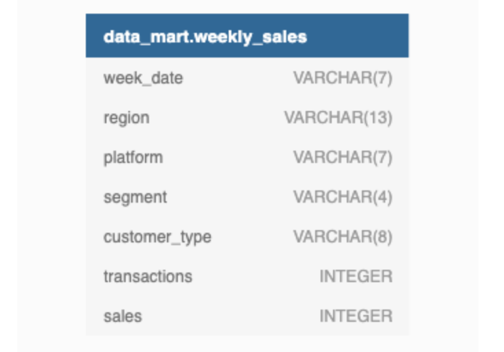
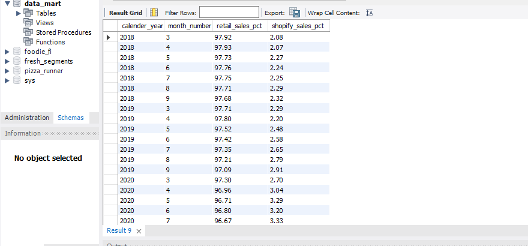

Introduction
Data Mart is Danny’s latest venture and after running international operations for his online supermarket that specialises in fresh produce - Danny is asking for your support to analyse his sales performance.
In June 2020 - large scale supply changes were made at Data Mart. All Data Mart products now use sustainable packaging methods in every single step from the farm all the way to the customer.
Danny needs your help to quantify the impact of this change on the sales performance for Data Mart and it’s separate business areas.
The key business question he wants you to help him answer are the following:
What was the quantifiable impact of the changes introduced in June 2020?
Which platform, region, segment and customer types were the most impacted by this change?
What can we do about future introduction of similar sustainability updates to the business to minimise impact on sales?
Available Data
For this case study there is only a single table: data_mart.weekly_sales
The Entity Relationship Diagram is shown below with the data types made clear, please note that there is only this one table - hence why it looks a little bit lonely!

Column Dictionary
The columns are pretty self-explanatory based on the column names but here are some further details about the dataset:
Data Mart has international operations using a
multi-regionstrategyData Mart has both, a retail and online
platformin the form of a Shopify store front to serve their customersCustomer
segmentandcustomer_typedata relates to personal age and demographics information that is shared with Data Mart.transactionsis the count of unique purchases made through Data Mart and sales is the actual dollar amount of purchases
Each record in the dataset is related to a specific aggregated slice of the underlying sales data rolled up into a week_date value which represents the start of the sales week.
Example Rows
10 random rows are shown in the table output below from data_mart.weekly_sales:
| week_date | region | platform | segment | customer_type | transactions | sales |
|---|---|---|---|---|---|---|
| 9/9/20 | OCEANIA | Shopify | C3 | New | 610 | 110033.89 |
| 29/7/20 | AFRICA | Retail | C1 | New | 110692 | 3053771.19 |
| 22/7/20 | EUROPE | Shopify | C4 | Existing | 24 | 8101.54 |
| 13/5/20 | AFRICA | Shopify | null | Guest | 5287 | 1003301.37 |
| 24/7/19 | ASIA | Retail | C1 | New | 127342 | 3151780.41 |
| 10/7/19 | CANADA | Shopify | F3 | New | 51 | 8844.93 |
| 26/6/19 | OCEANIA | Retail | C3 | New | 152921 | 5551385.36 |
| 29/5/19 | SOUTH AMERICA | Shopify | null | New | 53 | 10056.2 |
| 22/8/18 | AFRICA | Retail | null | Existing | 31721 | 1718863.58 |
| 25/7/18 | SOUTH AMERICA | Retail | null | New | 2136 | 81757.91 |
Interactive SQL Session
The Dataset for this case study can be accessed from here. I will be using MySQL to solve this case study. In order to solve yourself this case study, simply go to the above link and choose MySQL Dialect (version > 8, if using MySQL version higher than 8 locally), copy & paste the Database schema into MySQL.
Here is the snapshot of it.
Case Study Questions
The following case study questions require some data cleaning steps before we start to unpack Danny’s key business questions in more depth.
1. Data Cleansing Steps
In a single query, perform the following operations and generate a new table in the data_mart schema named clean_weekly_sales:
Convert the
week_dateto a DATE formatAdd a
week_numberas the second column for eachweek_datevalue, for example any value from the 1st of January to 7th of January will be 1, 8th to 14th will be 2 etc.Add a
month_numberwith the calendar month for eachweek_datevalue as the 3rd column.Add a
calendar_yearcolumn as the 4th column containing either 2018, 2019 or 2020 values.Add a new column called
age_bandafter the original segment column using the following mapping on the number inside the segment value.
| segment | age_band |
|---|---|
| 1 | Young Adults |
| 2 | Middle Aged |
| 3 or 4 | Retirees |
- Add a new
demographiccolumn using the following mapping for the first letter in thesegmentvalues:
| segment | demographic |
|---|---|
| C | Couples |
| F | Families |
Ensure all
nullstring values with an"unknown"string value in the originalsegmentcolumn as well as the newage_bandanddemographiccolumnsGenerate a new
avg_transactioncolumn as thesalesvalue divided bytransactionsrounded to 2 decimal places for each record
2. Data Exploration
What day of the week is used for each week_date value?
What range of week numbers are missing from the dataset?
How many total transactions were there for each year in the dataset?
What is the total sales for each region for each month?
What is the total count of transactions for each platform
What is the percentage of sales for Retail vs Shopify for each month?
What is the percentage of sales by demographic for each year in the dataset?
Which age_band and demographic values contribute the most to Retail sales?
Can we use the avg_transaction column to find the average transaction size for each year for Retail vs Shopify? If not - how would you calculate it instead?
3. Before & After Analysis
This technique is usually used when we inspect an important event and want to inspect the impact before and after a certain point in time.
Taking the week_date value of 2020-06-15 as the baseline week where the Data Mart sustainable packaging changes came into effect.
We would include all week_date values for 2020-06-15 as the start of the period after the change and the previous week_date values would be before
Using this analysis approach - answer the following questions:
What is the total sales for the 4 weeks before and after 2020-06-15? What is the growth or reduction rate in actual values and percentage of sales?
What about the entire 12 weeks before and after?
How do the sale metrics for these 2 periods before and after compare with the previous years in 2018 and 2019?
4. Bonus Question
Which areas of the business have the highest negative impact in sales metrics performance in 2020 for the 12 week before and after period?
regionplatformage_banddemographiccustomer_type
Do you have any further recommendations for Danny’s team at Data Mart or any interesting insights based off this analysis?
Let’s start solving them.
1. Data Cleansing Steps
In a single query, perform the following operations and generate a new table in the data_mart schema named clean_weekly_sales:
Convert the
week_dateto a DATE formatAdd a
week_numberas the second column for eachweek_datevalue, for example any value from the 1st of January to 7th of January will be 1, 8th to 14th will be 2 etc.Add a
month_numberwith the calendar month for eachweek_datevalue as the 3rd column.Add a
calendar_yearcolumn as the 4th column containing either 2018, 2019 or 2020 values.Add a new column called
age_bandafter the original segment column using the following mapping on the number inside the segment value.
| segment | age_band |
|---|---|
| 1 | Young Adults |
| 2 | Middle Aged |
| 3 or 4 | Retirees |
- Add a new
demographiccolumn using the following mapping for the first letter in thesegmentvalues:
| segment | demographic |
|---|---|
| C | Couples |
| F | Families |
Ensure all
nullstring values with an"unknown"string value in the originalsegmentcolumn as well as the newage_bandanddemographiccolumnsGenerate a new
avg_transactioncolumn as thesalesvalue divided bytransactionsrounded to 2 decimal places for each record
Part 1
Below is the SQL query to perform all the data cleaning steps asked in the above question:
Below is the outut of the above query looks like:
2. Data Exploration
1. What day of the week is used for each week_date value?
2. What range of week numbers are missing from the dataset?
3. How many total transactions were there for each year in the dataset?*
4. What is the total sales for each region for each month?
5. What is the total count of transactions for each platform.
6. What is the percentage of sales for Retail vs Shopify for each month?
Below is the result of the above query:

7. What is the percentage of sales by demographic for each year in the dataset?

8. Which age_band and demographic values contribute the most to Retail sales?
9. Can we use the avg_transaction column to find the average transaction size for each year for Retail vs Shopify? If not - how would you calculate it instead?
3. Before & After Analysis
This technique is usually used when we inspect an important event and want to inspect the impact before and after a certain point in time.
Taking the week_date value of 2020-06-15 as the baseline week where the Data Mart sustainable packaging changes came into effect.
We would include all week_date values for 2020-06-15 as the start of the period after the change and the previous week_date values would be before
Using this analysis approach - answer the following questions:
1. What is the total sales for the 4 weeks before and after 2020-06-15? What is the growth or reduction rate in actual values and percentage of sales?
2. What about the entire 12 weeks before and after?
Below is the output of the above query:
3. How do the sale metrics for these 2 periods before and after compare with the previous years in 2018 and 2019?
4. Bonus Question
Which areas of the business have the highest negative impact in sales metrics performance in 2020 for the 12 week before and after period?
regionplatformage_banddemographiccustomer_type
Do you have any further recommendations for Danny’s team at Data Mart or any interesting insights based off this analysis?